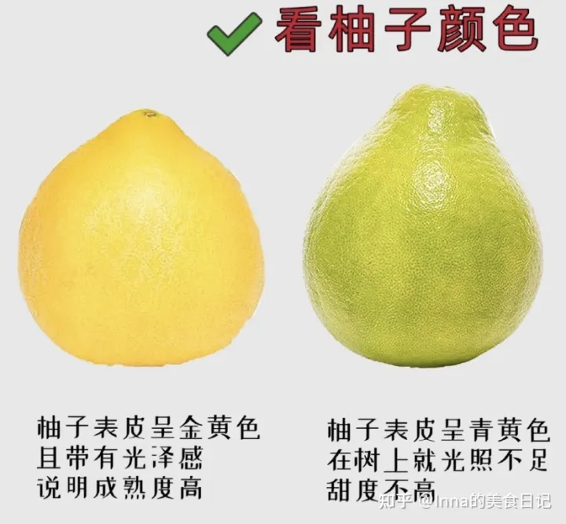
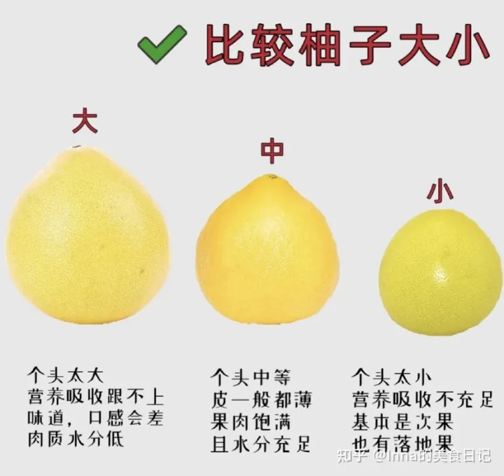
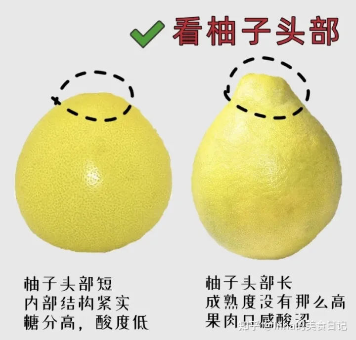
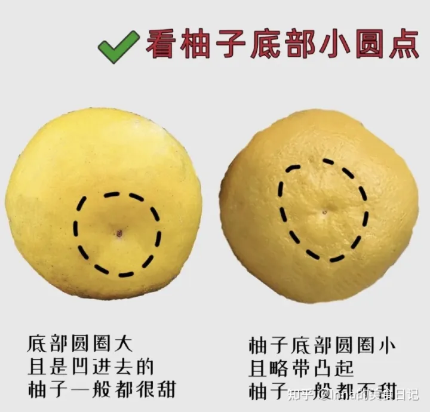

柚柚的挑选

挑选步骤
-
（1）看柚子颜色
 -
（2）闻一闻
可以仔细的闻闻柚子的香气，香味比较浓郁的，成熟比较彻底，香味越淡，说明柚子越不成熟。 -
（3）摸表面
质量好的柚子表面比较光滑，摸起来没有凹凸感。如果表面很粗糙，则有可能是皮厚肉少。 - （4）掂重量
越重越好，在买的时候注意要选择个头小，重量大的柚柚。
 -
（4）看柚子头部
柚子头部越短，说明它的内部结构越紧实，说明柚子成熟度高，糖分高，酸度低.
 -
（5)看柚子底部的小黑点
底部圆圈大，且是凹进去的，这样的柚子一般都比较甜.
